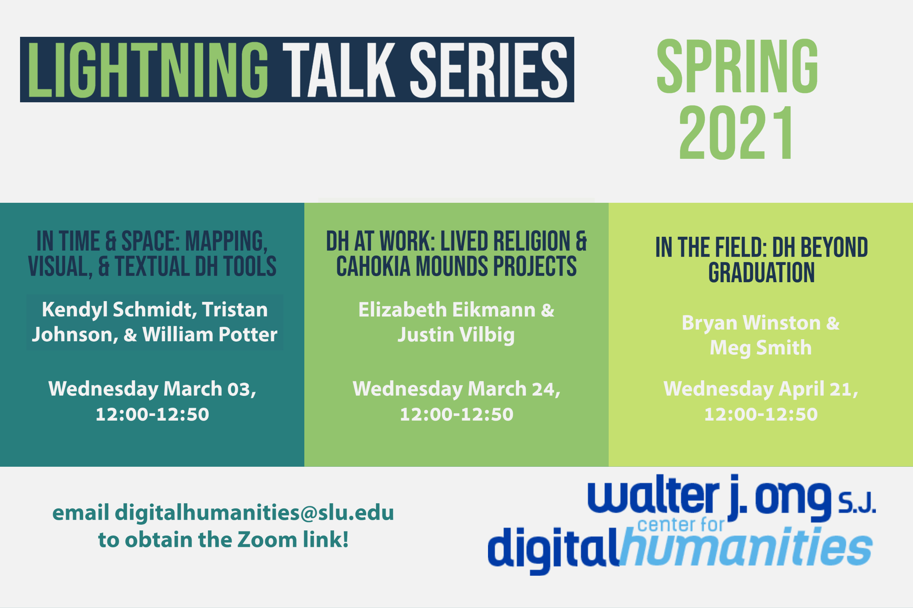

v2:2021-02-09
v2:2021-02-09
LIGHTNING TALK SERIES – FALL 2021
Fall 2021
Introduction to Digital Humanities!
- Date: Wednesday September 22, 11:30-12:30
Workshop 0 - Introduction to the Digital Humanities
- Led by Associate Director John McEwan, Ph.D.
- Date: Wednesday September 22, 12:00p-12:45p
- Location: Morrisey 3400
- Want to find out more about the digital humanities? Are you curious about what the Digital Humanities center at Saint Louis University has to offer? Got a great idea for a digital project? Drop by and meet the staff of your digital humanities center.
Workshop 1 - How to Use Twine
- Date: Wednesday September 29, 11:30-12:30
- Twine is an open-source tool for telling interactive, nonlinear stories. You don't need to write any code to create a simple story with Twine, but you can extend your stories with variables, conditional logic, images, CSS, and JavaScript when you're ready.
Student Lightning Talk #1
- Date: Wednesday October 6, 11:30-12:30
Workshop 2 - How to Use Zotero
- Date: Wednesday October 13, 11:30-12:30
- Zotero is a free and open-source reference management software to manage bibliographic data and related research materials (such as PDF files). Notable features include web browser integration, online syncing, generation of in-text citations, footnotes, and bibliographies, as well as integration with the word processors Microsoft Word, LibreOffice Writer, and Google Docs.
Workshop 3 - How to Use Gephi and Textextura (in collaboration with the SLU University Archivist)
- Date: Wednesday October 20, 11:00-12:00
Student Lightning Talk #2
- Date: Wednesday November 3, 11:30-12:30
Workshop 4 - How to Use Python
- Date: Wednesday November 17, 11:30-12:30
- Python is an interpreted high-level general-purpose programming language. Its design philosophy emphasizes code readability with its use of significant indentation. Its language constructs as well as its object-oriented approach aim to help programmers write clear, logical code for small and large-scale projects.
Student Lightning Talk #3
- Date: Wednesday December 1, 11:30-12:30
Digital Humanities Social!
- Date: Wednesday, December 8, 11:30-12:30
Past Events
Session 2 – DH at Work: Lived Religion & Cahokia Mounds Projects
- Speakers: Elizabeth Eikmann & Justin Vilbig
- Date: Wednesday March 24, 12:00-12:50
Session 3 – In the Field: DH Beyond Graduation
- Speakers: Bryan Winston & Meg Smith
- Date: Wednesday April 21, 12:00-12:50
